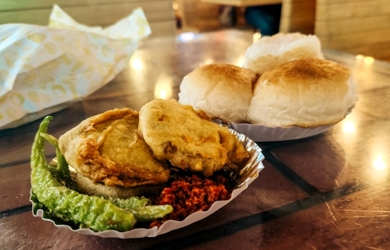
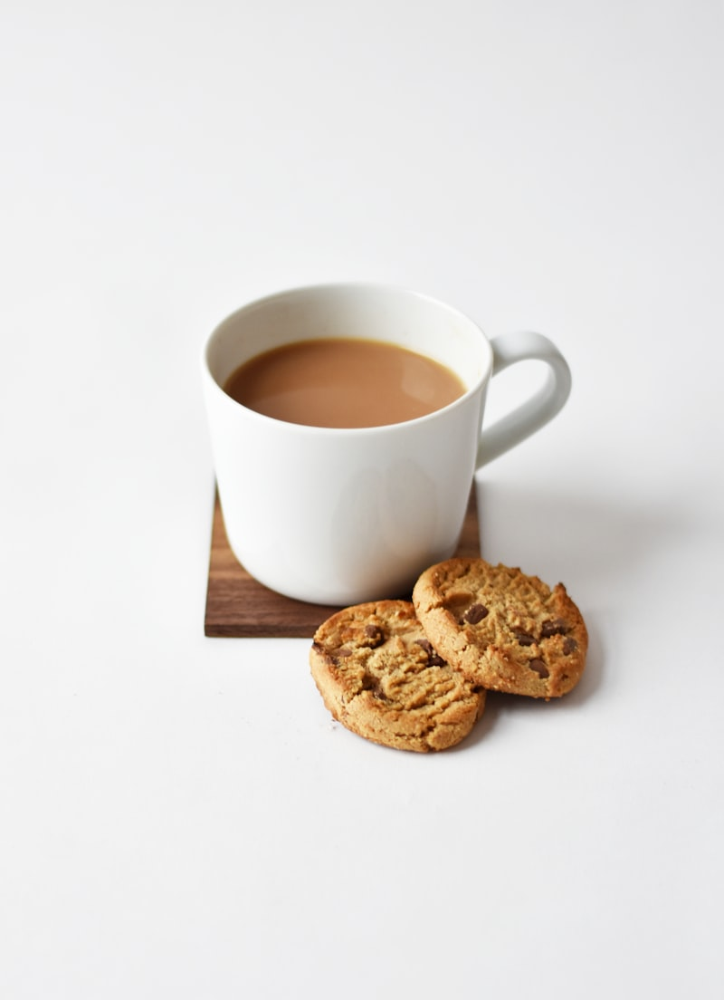
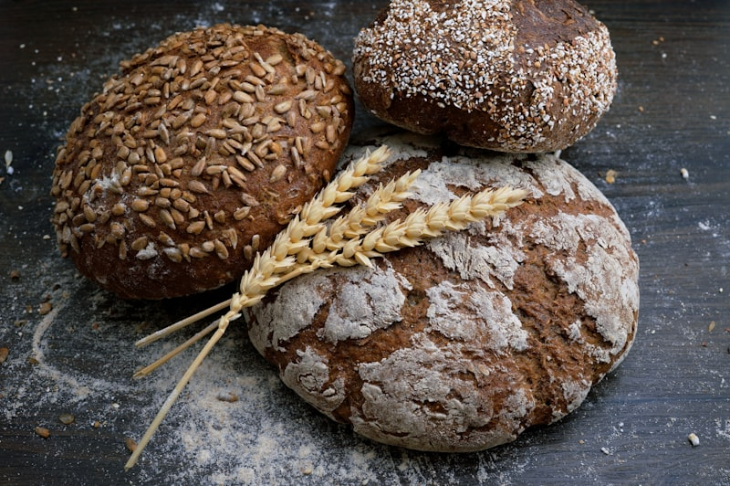

Nicket grew up across many cultures and weaves those influences into the work—street and ceremony, tradition and experiment, place and memory. These places were all once home. Silicon Valley is the current home.

Mumbai · once home
Food—vada pav at a roadside stall—culture and language here shaped how Nicket sees rhythm and plurality. Art became the ultimate form of expression across those worlds.

London · once home
High tea and layered histories, ritual and restraint—the food, culture and language of London left a deep mark. For Nicket, art is the ultimate form of expression beyond any single tongue or place.

Silicon Valley · current home
Sourdough and long bets, craft and startup spirit—the food, culture and language of the Bay shaped Nicket here and now. Art remains the ultimate form of expression.